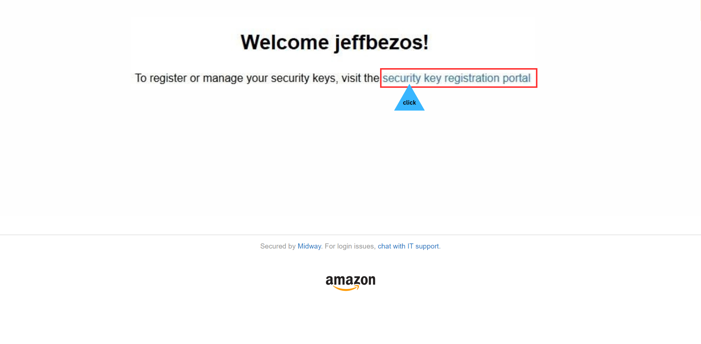
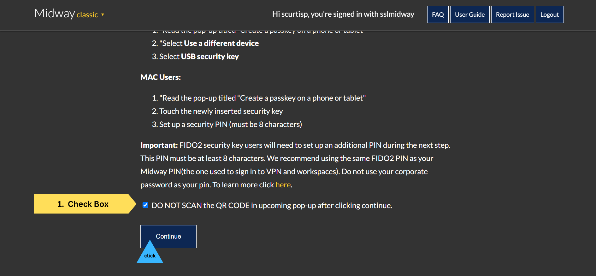
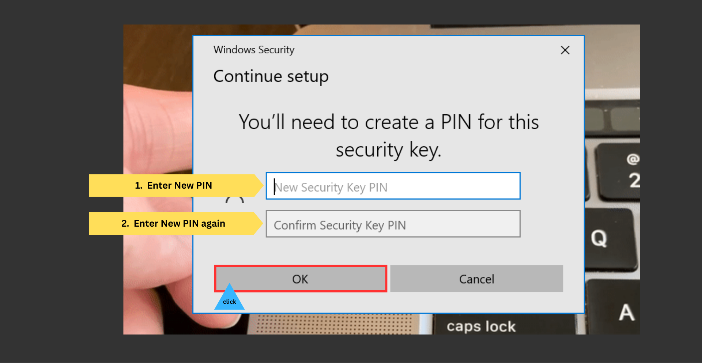

Lost Zukey?
Inform your direct manager or OTS. Zukeys may be obtained from the IT hub upon request. All requests for Zukeys must be submitted through it-help.amazon.com and must be approved by L6 or above leadership.
How to register your Zukey
What's a Zukey? Zukey is a physical or digital security device that provides an additional layer of security when logging into online accounts, applications, or services at Amazon.
You will need…
- Your Amazon username and password
- Zukey (Obtained from IT Hub)
- Temporary PIN (Will be emailed to you once request is approved)
- Amazon-issued Windows laptop
Where do I get a temporary PIN? A temporary PIN will be emailed to you prior to key registration. Generally, IT will email you a Temporary PIN when you pick up your Zukey at the IT Hub..
Sign into an Amazon-issued Windows laptop or computer with your username and password
Tip: Ask IT to Pri-logIn any available shared Amazon computer if your sign in fails..
Use Google Chrome
Tip: If you are using self-service laptop outside of the IT hub, look for the “Midway signin for zukey” shortcut on the desktop. Doble-click the sortcut to go directly to midway authentication portal.
1Navigate to midway-auth.amazon.com

2Enter your Amazon username and Temporary PIN. Click “Sign In”

3Click “security key registration portal”
4Click “REGISTER SECURITY KEY”

5Click “Begin registration”

6Click the image of the security key that looks like yours.

Tip: There are several types of security keys at Amazon, but they all have the same features. ABQ2 is currently distributing Fantom4 USB-C Nano Zukeys.
7Insert your Zukey into USB-C port on computer.
Tip: Once the security key is inserted, the computer/laptop will take a few seconds to detect and identify the security device. Generally, you will see a notification about “new device” detection. If you don’t see a notification, check to make sure your device is properly inserted or reinsert the key into one of the other available USB ports.
8Click inside One-Time Password(OTP ) field

9Touch your security key for 3-5 seconds to generate a One-Time Password(OTP)

Tip: Depending on the type of security key you have, you’ll need to apply light pressure to either its side or top. If you're pressing your security key but it isn't entering a One-Time Password ( OTP), remove your finger from the security key, click the text box, and then touch the security key again.
10Enter a new PIN, confirm new PIN. Click “Continue”

Important: Choose a security key PIN that's easy to remember. You’ll type it every day when you log in to internal Amazon services and VPN. It doesn’t expire.
11Select “DO NOT SCAN the QR CODE…”checkbox and click"Continue"
12Click “Save another way”

13Click “Use an external security key”

14Click "OK"

15Click "OK" to continue setup

16Enter your new PIN confirm new PIN and click"OK"
17 Touch and hold Zukey for 3 seconds. Release then touch and hold again

All Done!